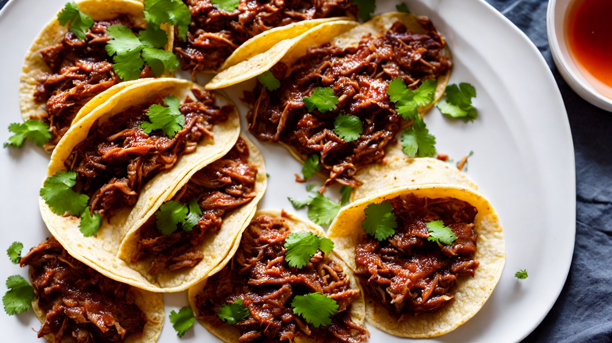
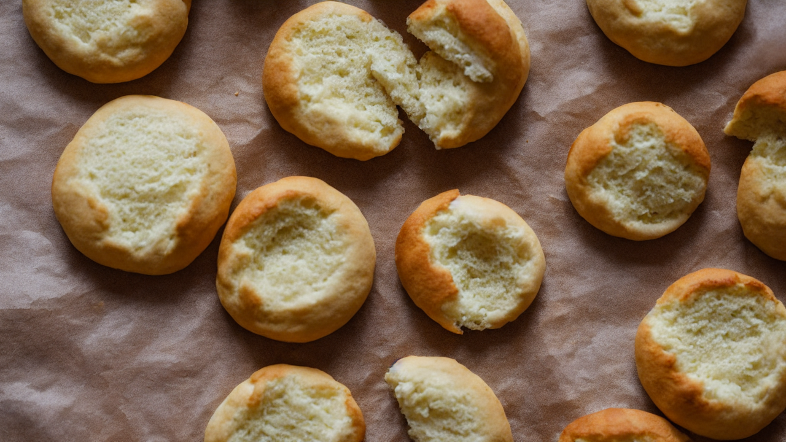
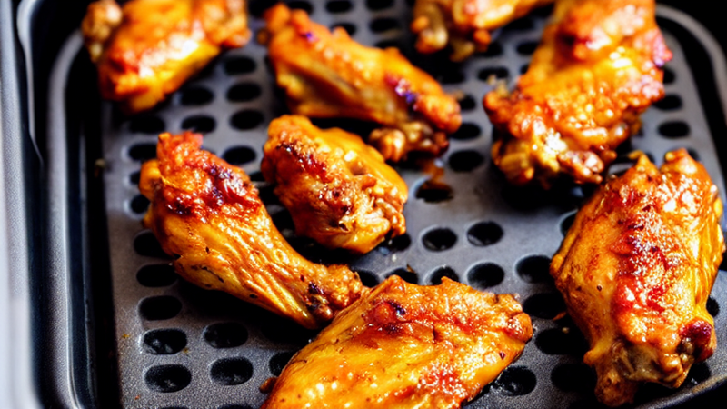
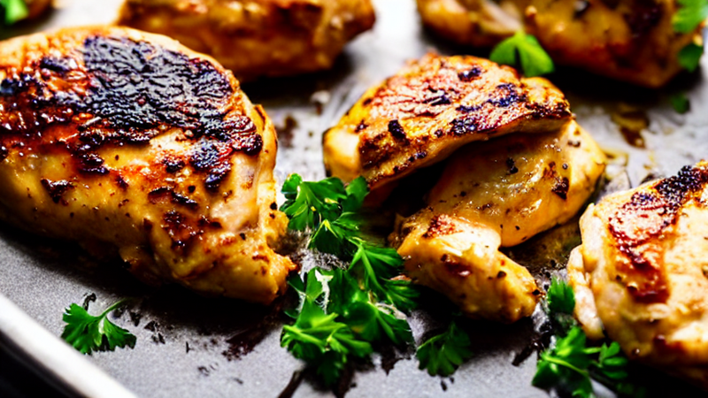
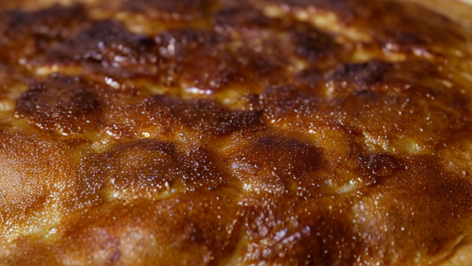
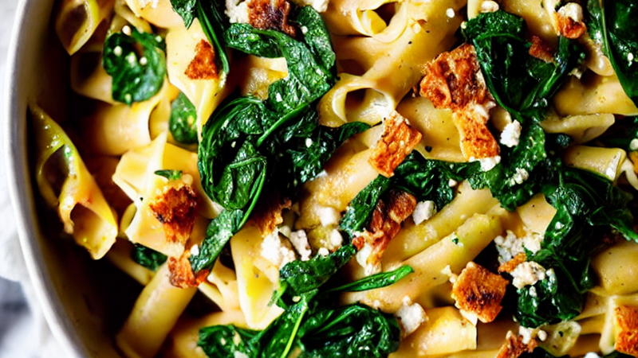

15-Minute Creamy Tuscan Salmon | Quick & Flavorful Recipe
This Creamy Tuscan Salmon recipe is a weeknight winner! Fresh salmon, cherry tomatoes, and a rich ga...

5-Minute Chocolate Mug Cake | Quick Dessert Hack!
This 5-Minute Chocolate Mug Cake is a game-changer for sweet cravings! Perfect for busy nights or im...

Baked Oats | The Healthy Breakfast That Tastes Like Cake
These Baked Oats taste like eating cake for breakfast but are actually healthy! Naturally sweetened,...

Authentic Birria Tacos | Crispy, Cheesy & Dripping with Consomme
These viral Birria Tacos are loaded with tender, slow-braised beef, melted cheese, and served with a...

Butter Chicken | Rich, Creamy & Better Than Takeout
This homemade Butter Chicken is incredibly rich, creamy, and packed with warm spices. Tender chicken...

Classic Garlic Butter Pasta | Quick & Creamy Dinner Recipe
Indulge in this rich garlic butter pasta recipe with creamy sauce and tender noodles. Perfect for ea...

3-Ingredient Cloud Bread | Fluffy, Pillowy & Totally Addictive
This viral Cloud Bread is impossibly fluffy, slightly sweet, and melts in your mouth like cotton can...

Creamy Mushroom Risotto | A Rich & Silky Comfort Food Classic
Indulge in this velvety Creamy Mushroom Risotto recipe! Perfectly balanced with Arborio rice, earthy...

Crispy Air Fryer Garlic Parmesan Wings | 15-Minute Dinner Hack
Achieve restaurant-quality crispy wings at home with this air fryer garlic parmesan recipe! Perfectl...

Easy One-Pan Lemon Herb Chicken | 30-Minute Dinner Hack
Transform chicken breasts into a juicy, herb-packed meal in one pan! This lemon herb recipe combines...

Fluffy Japanese Souffle Pancakes | Cloudy Delight Recipe
Discover how to make restaurant-quality fluffy Japanese souffle pancakes at home! These cloud-like p...
Ultimate Loaded Nachos | 15-Minute Family Favorite
This loaded nachos recipe is a crowd-pleaser with melted cheese, seasoned beef, and crispy tortilla ...

Viral TikTok Baked Feta Pasta | 10-Minute Creamy Delight
This Baked Feta Pasta is so good, you'll never order takeout again! Creamy, cheesy, and packed with ...
About Quick Bites Kitchen
Quick Bites Kitchen brings you easy, delicious recipes with beautiful step-by-step photos. From viral TikTok recipes to comfort food classics, we make cooking simple and fun. Every recipe is tested and photographed to help you cook with confidence.
Browse our collection of quick dinner ideas, healthy breakfasts, viral food trends, and international favorites. New recipes added weekly!